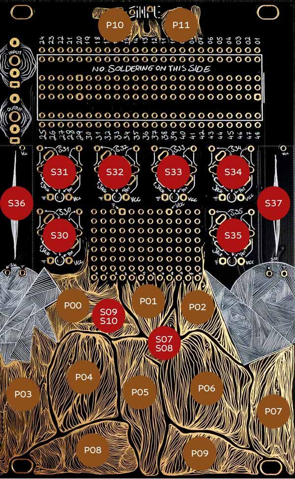

Creek
A sample-free procedural creek for the Synthux Academy Touch 2 (Daisy Seed), from a quiet trickle to a lively shallow stream. Nothing is recorded: hundreds of tiny bubbles per second, slow eddies, small splashes and fine surface ticks, all driven by one slowly changing creek state. Switch to Notes and play it: tap for tuned drops, hold to make the whole stream sing a note.
Each bubble is a short decaying tone whose pitch comes from its size, f₀ ≈ 3 / r (van den Doel, 2005). Big bubbles are low, small ones high.

Quick Install
Download the newest file from releases/ (its README says what each version changes) and flash it with the Daisy web programmer in Chrome or Edge:
- Unplugged: hold BOOT while plugging in USB
- Already powered: hold BOOT, tap RESET, release BOOT
Then Connect → DFU in FS Mode → choose the file → Program. To go back, flash any other firmware the same way.
Controls
At power-up the creek plays whatever the knobs and faders are set to. The browser emulator has the same panel and behaves the same.
Faders
| Control | Function |
|---|---|
| S36 (left) | Level: output volume, as on TouchPulsar. Silent at the bottom, 0 dB at about 70 %, +6 dB at the top. |
| S37 (right) | Roughness: smooth channel → rocky interruptions. More turbulence, so more bubbling, deeper eddies, more uneven splashes and more surface ticks. |
Knobs
| Control | Function |
|---|---|
| S31 | Scale: fine shallow trickle → larger stream body. Bubbles get 0.6× to 1.8× bigger, so their typical pitch falls (about 3.2 kHz → 1.3 kHz); splashes plop lower and eddies get slower. |
| S32 | Aeration: sparse bubbling → bubbly white water. Fully left = no bubbles at all. |
| S33 | Flow: still → trickle → lively creek. More bubbles, more splashes at the drop (0.2 → 4 per second). Fully left: the creek fades to silence within about 1.5 s. |
| S34 | Decay: how long every bubble, drop, plop and tick rings. Noon = default; left shorter (down to ¼), right longer (up to 4×). |
| P10 + S34 | Width: mono fully left, natural stereo at noon, wider fully right. Picks up once moved. |
| S30 | Free flow (Notes): how much the creek plays by itself. Fully left = still water, only your notes sound. Presets and Diagnostics always flow. |
| S35 | Variety (Notes): noon = default (the held note, in the octave nearest each bubble's size). Left: more and more exactly the held note (fully left = one note). Right: more and more other notes of the active scale, up to an octave around the held note. |
Soft pickup: after a preset, the four sound knobs (Flow, Roughness, Scale, Aeration) do nothing until you move them a little, then take over from where they are. Recalling a preset never jumps back to the knob positions.
Switches
| Switch | Up | Centre | Down |
|---|---|---|---|
| Left (S09/S10) | Presets | Notes | Diagnostics |
| Right (S07/S08) | live | live | Hold the slow creek state: flow, turbulence and air stop changing so you can compare settings; bubbles keep happening. |
Pads: Presets (left switch up)
| Pad | Preset | Flow | Roughness | Scale | Aeration |
|---|---|---|---|---|---|
| P03 | Quiet trickle | 0.20 | 0.25 | 0.20 | 0.30 |
| P04 | Rocky creek | 0.50 | 0.60 | 0.45 | 0.55 |
| P05 | Small cascade | 0.75 | 0.80 | 0.50 | 0.85 |
| P06 | Deeper run | 0.65 | 0.35 | 0.80 | 0.40 |
Presets glide over 250 ms.
Pads: Notes (left switch centre)
Play the creek as an instrument; the creek keeps running underneath.
| Pad | Function |
|---|---|
| P03 … P09 | Notes of the scale (default C major pentatonic, from C5). Tap: a tuned drop, a bubble at that note with a short bubbly tail (1–3 quieter bubbles at the same note or an octave up). Hit harder for a louder drop. Hold: the water pours onto the held note: bubbles in the rhythm of Flow, Roughness and Aeration, pitched by Variety, rising in about a quarter second and settling about half a second after release. Hold several pads (up to 4) for a chord. With Free flow up, the creek's own bubbles gather onto the notes too. |
| P00 / P02 | Octave down / up (−1 to +2; in Chromatic, pages of 7 semitones) |
| P11 + P00 / P02 | Previous / next scale |
| P11 + P03 … P09 | Choose a scale: Chromatic, Major, Natural Minor, Minor Pentatonic, Major Pentatonic, Dorian, Harmonic Minor (the same seven as TouchPulsar) |
| P10 + P03 … P09 | Set the root key to that pad's note |
Pads: Diagnostics (left switch down)
| Pad | Function |
|---|---|
| P03 | Flow bed on/off (the noise wash is switched off for now, so this is silent) |
| P04 | Bubbles on/off |
| P05 | Eddies on/off (no sound of their own: muting them stops the rock wake from surging) |
| P06 | Small waterfalls on/off (the plops; their bubbly settling belongs to the bubbles) |
| P07 | Surface detail on/off |
| P08 | All layers on |
| P09 | Stress test on/off: worst-case settings with sudden jumps and loud note bursts, LED blinks fast. For measuring the CPU load with the monitor. |
Muting is smooth (20 ms) and doesn't change what the other layers do. In Presets and Notes all layers always play; the mutes are remembered for next time.
LED
- Switching mode: 1 blink = Presets, 2 = Notes, 3 = Diagnostics
- 1–4 blinks: preset number · 1–7 quick blinks: scale number · octave changes blink the octave · 1 long blink: root set
- 2 blinks: layer on · 1 blink: layer muted · 3 quick blinks: all on · 4 quick blinks then fast blinking: stress test running
- Otherwise it flickers with notes and the louder bubbles (in Diagnostics it stays lit and dips)
What you hear
Everything is made of short decaying tones; there is no noise in the sound for now.
- Bubbles: the main voice. Up to 24 at once, mostly small and quiet, now and then a larger, lower and louder one. About a third rise slightly in pitch as they fade. They gather in the rock wake (slightly left) and the drop (slightly right), fewer in the open flow (centre).
- Eddies: two to four overlapping slow swells (0.3–3 s, slower with larger Scale) in the rock wake: the left side of the creek surges with more, slightly bigger and lower bubbles, then settles.
- Small waterfalls: at the drop (right), 0.2–4 times a second as Flow rises: a soft low plop falling in pitch, then 2–8 bubbles settling over the next tenth of a second (more with Aeration), plus a short burst of extra air. Overlapping splashes share a limited energy, so they never swamp the creek.
- Surface detail: sparse, very short, quiet high ticks (2–9 kHz), more near the drop, at turbulence peaks and right after splashes, in loose bursts rather than a steady crackle.
- Shared state: three places (flow, rock wake, drop) each have their own energy, turbulence and air. They follow the knobs with some inertia (0.1–0.35 s) and drift on their own, so surges feel connected without everything pulsing at once.
Emulator & monitor
- Emulator: run
python3 web/serve.py 8766and openhttp://localhost:8766. Same engine (a JavaScript twin, checked against the firmware's), same panel, pickup and LED. "Render 30 s WAV" saves what you hear. - Monitor:
http://localhost:8766/monitor.htmlreads the firmware's once-a-second report over USB (Chrome or Edge): CPU load (average and worst audio block), voices, bubbles per second, stack use, dropped events and limiter activity. Use Diagnostics + P09 for the worst case; the brief asks for the worst block below 70 %.
Building
Needs the ARM GNU toolchain (13.3) on the PATH.
git submodule update --init --recursive
make -C daisy/lib/libDaisy
make -C daisyTests and renders (Mac or Linux compiler, no Daisy needed): make -C daisy/test (acceptance checks and C++/JS comparison), make -C daisy/test soak (30-minute stability run), make -C daisy/test renders (reference WAVs of every scenario in scenarios/, each with a .json of seed, settings, automation and statistics).
Credits
Bubble model after Kees van den Doel, Physically-based Models for Liquid Sounds (ACM TAP 2005); sound decomposition after Andy Farnell, Designing Sound (2010). Hardware: Touch 2 by Synthux Academy; pad, knob and switch drivers from Synthux Academy's TouchString. libDaisy by Electrosmith (MIT). Written with Claude Code. See CREDITS.md.